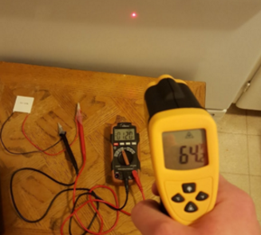
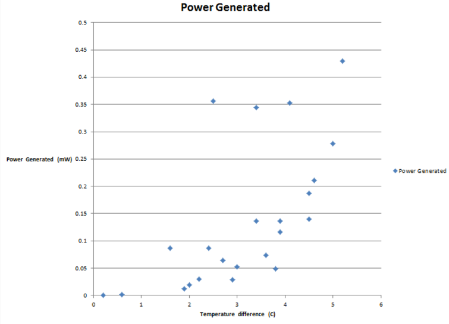

Objective:
To observe the power output from a range of temperature differences on a Peltier tileVariables:
Independent: Surface temperatureDependent: Voltage and Current generated
Limitations and considerations:
Limited budget and materials were available for this test, meaning accuracy is extremely low and results are limited.Equipment and Setup
Equipment:
- TEC1-12706 Thermoelectric Cooler Heat Sink Cooling Peltier 12V 5.8A
- Conventional Oven
- Digital Multimeter
- Digital Laser IR infrared Thermometer Temperature Gun
Schematic for the setup of the experiment

Temperature Gun for measuring surface temperature of oven
Procedure
- Set up equipment
- Set oven temperature
- Record surface temperatures using the infrared thermometer and voltage and current generated using the multimeter every few minutes
- Repeat for a range of temperatures of the oven
Findings
Our findings on power generated
Things of note:
- Highest temperature difference measured was around 5 degrees celsius
- Highest power generated was around 0.425 mW